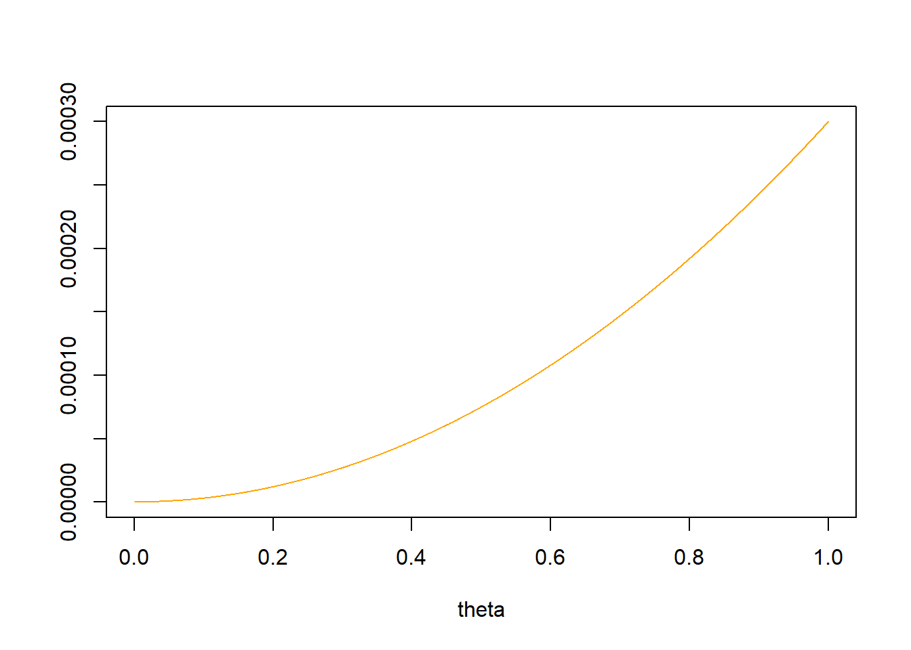
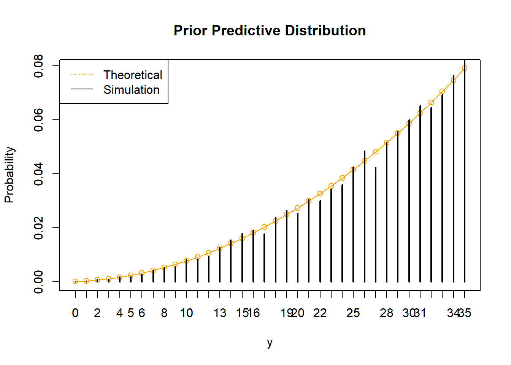
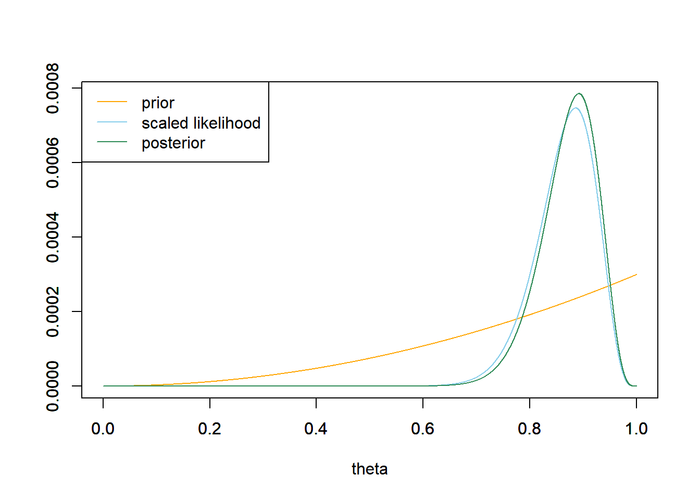
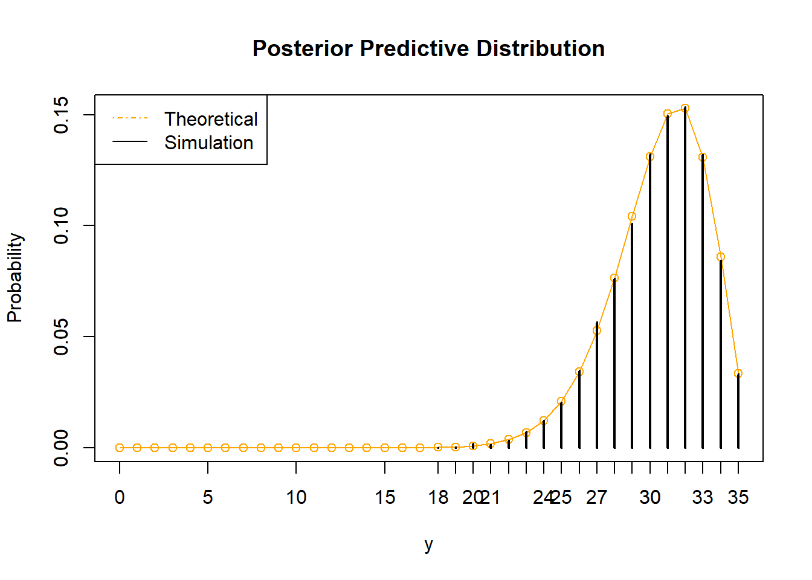
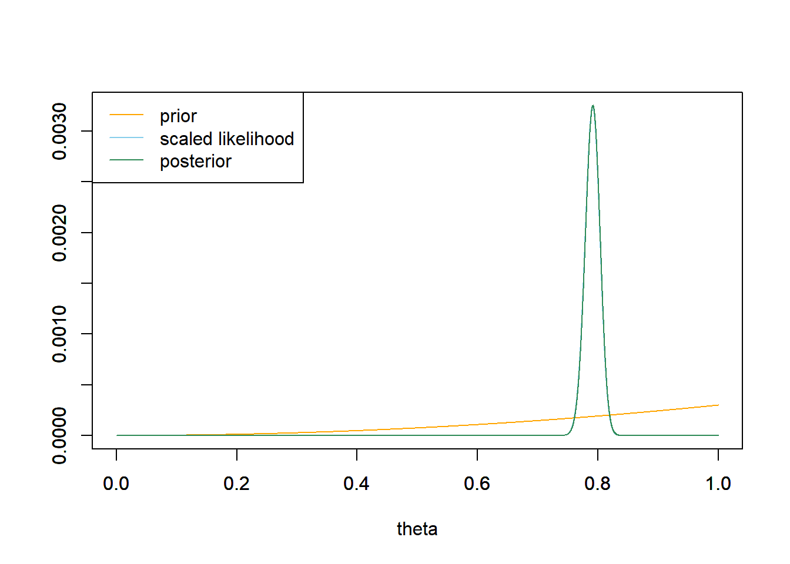
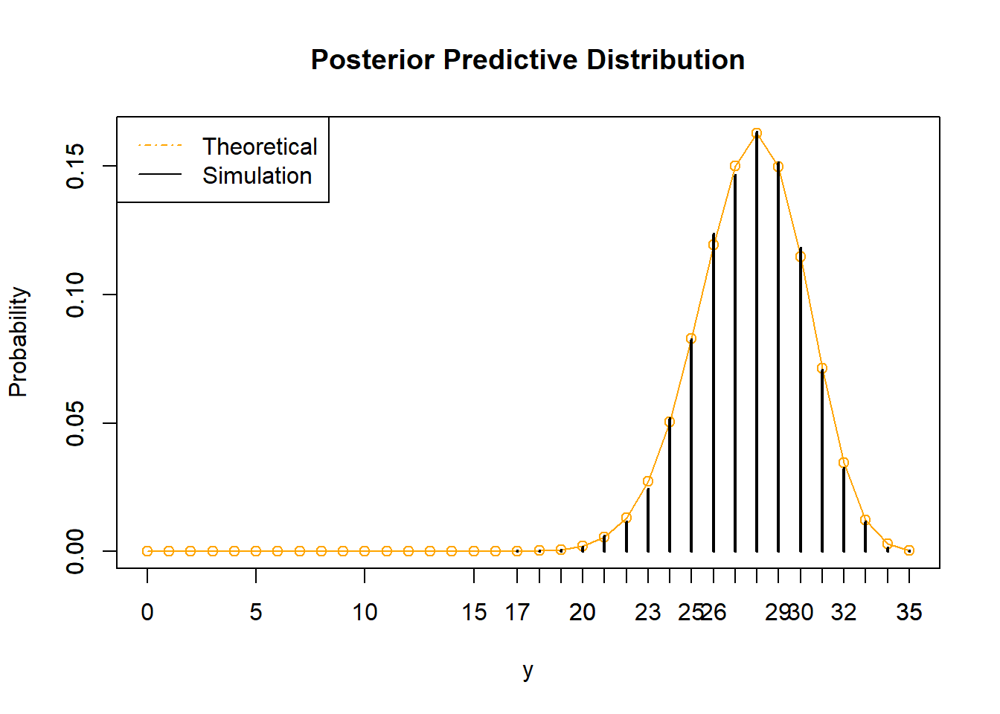
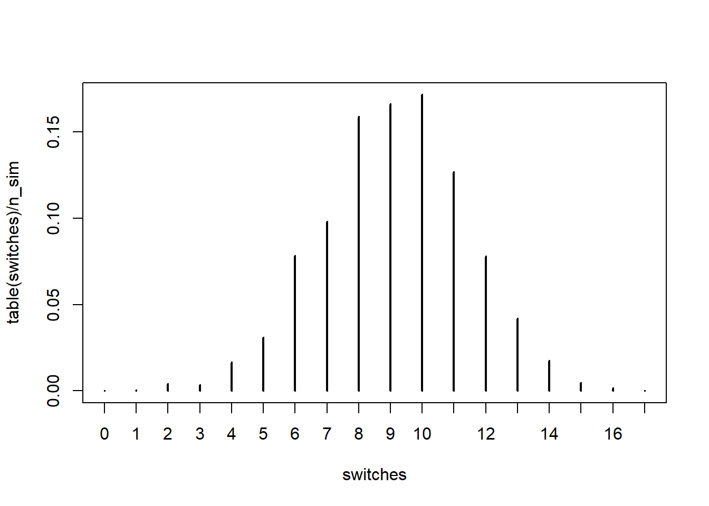

Chapter 6 Introduction to Prediction
A Bayesian analysis leads directly and naturally to making predictions about future observations from the random process that generated the data. Prediction is also useful for checking if model assumptions seem reasonable in light of observed data.
Example 6.1 Do people prefer to use the word “data” as singular or plural? Data journalists at FiveThirtyEight conducted a poll to address this question (and others). Rather than simply ask whether the respondent considered “data” to be singular or plural, they asked which of the following sentences they prefer:
- Some experts say it’s important to drink milk, but the data is inconclusive.
- Some experts say it’s important to drink milk, but the data are inconclusive.
Suppose we wish to study the opinions of students in Cal Poly statistics classes regarding this issue. That is, let \(\theta\) represent the population proportion of students in Cal Poly statistics classes who prefer to consider data as a singular noun, as in option a) above.
To illustrate ideas, we’ll start with a prior distribution which places probability 0.01, 0.05, 0.15, 0.30, 0.49 on the values 0.1, 0.3, 0.5, 0.7, 0.9, respectively.
Before observing any data, suppose we plan to randomly select a single Cal Poly statistics student. Consider the unconditional prior probability that the selected student prefers data as singular. (This is called a prior predictive probability.) Explain how you could use simulation to approximate this probability.
Compute the prior predictive probability from the previous part.
Before observing any data, suppose we plan to randomly select a sample of 35 Cal Poly statistics students. Consider the unconditional prior distribution of the number of students in the sample who prefer data as singular. (This is called a prior predictive distribution.) Explain how you could use simulation to approximate this distribution. In particular, how could you use simulation to approximate the prior predictive probability that at least 34 students in the sample prefer data as singular?
Compute the prior predictive probability that at least 34 students in a sample of size 35 prefer data as singular.
For the remaining parts, suppose that 31 students in a sample of 35 Cal Poly statistics students prefer data as singular.
Find the posterior distribution of \(\theta\).
Now suppose we plan to randomly select an additional Cal Poly statistics student. Consider the posterior predictive probability that this student prefers data as singular. Explain how you could use simulation to estimate this probability.
Compute the posterior predictive probability from the previous part.
Suppose we plan to collect data on another sample of \(35\) Cal Poly statistics students. Consider the posterior predictive distribution of the number of students in the new sample who prefer data as singular. Explain how you could use simulation to approximate this distribution, and then code and run the simulation. In particular, how could you use simulation to approximate the prior predictive probability that at least 34 students in the sample prefer data as singular? (Of course, the sample size of the new sample does not have to be 35. However, I’m keeping it the same so we can compare the prior and posterior predictions.)
Compute the posterior predictive probability that at least 34 students in a sample of size 35 prefer data as singular.
If we knew what \(\theta\) was, this probability would just be \(\theta\). For example, if \(\theta=0.9\), then there is a probability of 0.9 that a randomly selected student prefers data singular. If \(\theta\) were 0.9, we could approximate the probability by constructing a spinner with 90% of the area marked as “success”, spinning it many times, and recording the proportion of spins that land on success, which should be roughly 90%. Since we don’t know what \(\theta\) is, we need to first simulate a value of it from the prior distribution.
- Simulate a value of \(\theta\) from the prior distribution.
- Given the value of \(\theta\), construct a spinner that lands on success with probability \(\theta\). Spin the spinner once and record the result, success or not.
- Repeat steps 1 and 2 many times, and find the proportion of repetitions which result in success. This proportion approximates the unconditional probability of success.
Use the law of total probability, where the weights are given by the prior probabilities. \[ 0.1(0.01) + 0.3(0.05) + 0.5(0.15) + 0.7(0.30) + 0.9(0.49) = 0.742 \] (This calculation is equivalent to the expected value of \(\theta\) according to its prior distributon, that is, the prior mean.)
If we knew what \(\theta\) was, we could construct a spinner than lands on success with probability \(\theta\), spin it 35 times, and count the number of successes. But we don’t know what \(\theta\) is, so we have to simulate it first.
- Simulate a value of \(\theta\) from the prior distribution.
- Given the value of \(\theta\), construct a spinner that lands on success with probability \(\theta\). Spin the spinner 35 times and count the number of spins that land on success.
- Repeat steps 1 and 2 many times, and record the number of successes (out of 35) for each repetition. Summarize the simulated values to approximate the prior predictive distribution. To approximate the prior predictive probability that at least 34 students in a sample of size 35 prefer data as singular, count the number of simulated repetitions that result in at least 34 successes and divide by the total number of simulated repetitions.
If we knew \(\theta\), the probability of at least 34 (out of 35) successes is, from a Binomial distribution, \[ 35\theta^{34}(1-\theta) + \theta^{35} \] Use the law of total probability again. \[\begin{align*} & \left(35(0.1)^{34}(1-0.1) + 0.1^{35}\right)(0.01) + \left(35(0.3)^{34}(1-0.3) + 0.3^{35}\right)(0.05)\\ & + \left(35(0.5)^{34}(1-0.5) + 0.5^{35}\right)(0.15) + \left(35(0.7)^{34}(1-0.7) + 0.7^{35}\right)(0.30)\\ & + \left(35(0.9)^{34}(1-0.9) + 0.9^{35}\right)(0.49) = 0.06 \end{align*}\]
For the remaining parts, suppose that 31 students in a sample of 35 Cal Poly statistics students prefer data as singular.
The likelihood is \(\binom{35}{31}\theta^{31}(1-\theta)^{4}\), a function of \(\theta\);
dbinom(31, 35, theta). The posterior places almost all probability on \(\theta = 0.9\).# prior theta = seq(0.1, 0.9, 0.2) prior = c(0.01, 0.05, 0.15, 0.30, 0.49) # data n = 35 # sample size y = 31 # sample count of success # likelihood, using binomial likelihood = dbinom(y, n, theta) # function of theta # posterior product = likelihood * prior posterior = product / sum(product) # bayes table bayes_table = data.frame(theta, prior, likelihood, product, posterior) kable(bayes_table, digits = 4, align = 'r')theta prior likelihood product posterior 0.1 0.01 0.0000 0.0000 0.0000 0.3 0.05 0.0000 0.0000 0.0000 0.5 0.15 0.0000 0.0000 0.0000 0.7 0.30 0.0067 0.0020 0.0201 0.9 0.49 0.1998 0.0979 0.9799 The simulation would be similar to the prior simulation, but now we simulate \(\theta\) from its posterior distribution rather than the prior distribution.
Use the law of total probability, where the weights are given by the posterior probabilities. \[ 0.1(0.0000) + 0.3(0.0000) + 0.5(0.0000) + 0.7(0.0201) + 0.9(0.9799) = 0.8960 \] (This calculation is equivalent to the expected value of \(\theta\) according to its posterior distributon, that is, the posterior mean.)
The simulation would be similar to the prior simulation, but now we simulate \(\theta\) from its posterior distribution rather than the prior distribution. Since \(\theta=0.9\) with probability close to 1, the posterior distribution would be close to, but not quite, the Binomial(35, 0.9) distribution.
Use the law of total probability again, but with the posterior probabilities rather than the prior probabilities as the weights. \[\begin{align*} & \left(35(0.1)^{34}(1-0.1) + 0.1^{35}\right)(0.0000) + \left(35(0.3)^{34}(1-0.3) + 0.3^{35}\right)(0.0000)\\ & + \left(35(0.5)^{34}(1-0.5) + 0.5^{35}\right)(0.0000) + \left(35(0.7)^{34}(1-0.7) + 0.7^{35}\right)(0.0201)\\ & + \left(35(0.9)^{34}(1-0.9) + 0.9^{35}\right)(0.9799) = 0.1199 \end{align*}\]
The predictive distribution of a random variable is the marginal distribution (of the unobserved values) after accounting for the uncertainty in the parameters. A prior predictive distribution is calculated using the prior distribution of the parameters. A posterior predictive distribution is calculated using the posterior distribution of the parameters, conditional on the observed data.
Prior and posterior distributions are distributions on values of the parameters. These distributions quantify the degree of uncertainty about the unknown parameter \(\theta\) (before and after observing data).
On the other hand, prior and posterior predictive distributions are distribution on potential values of the data. Predictive distributions reflect sample-to-sample variability of the sample data, while accounting for the uncertainty in the parameters.
Predictive probabilities can be computed via the law of total probability. However, even when conditional distributions of data given the parameters are well known, the marginal distributions of the data are often not. Simulation is an effective tool in approximating predictive distributions.
- Step 1: Generate a value of \(\theta\) from its posterior distribution (or prior distribution).
- Step 2: Given this value of \(\theta\) generate a value of \(y\) from \(f(y|\theta)\), the data model conditional on \(\theta\).
- Repeat many times and summarize the values of \(y\) to approximate the posterior predictive distribution (or prior predictive distribution).
Consider the context of this problem and sketch your prior distribution for \(\theta\). What are the main features of your prior?
Assume the prior distribution for \(\theta\) is proportional to \(\theta^2\). Plot this prior distribution and describe its main features. In particular, find and interpret a 95% central prior credible interval for \(\theta\).
Before observing any data, suppose we plan to randomly select a sample of 35 Cal Poly statistics students. Let \(Y\) represent the number of students in the selected sample who prefer data as singular. Use simulation to approximate the prior predictive distribution of \(Y\) and plot it.
Use software to compute the prior predictive distribution of \(Y\). Compare to the simulation results.
Find a 95% prior prediction interval for \(Y\). Write a clearly worded sentence interpreting this interval in context.
For the remaining parts, suppose that 31 students in a sample of 35 Cal Poly statistics students prefer data as singular.
Use software to plot the prior distribution and the (scaled) likelihood, then find the posterior distribution of \(\theta\) and plot it and describe its main features. In particular, find and interpret a 95% central posterior credible interval for \(\theta\).
Suppose we plan to randomly select another sample of 35 Cal Poly statistics students. Let \(\tilde{Y}\) represent the number of students in the selected sample who prefer data as singular. Use simulation to approximate the posterior predictive distribution of \(\tilde{Y}\) and plot it. (Of course, the sample size of the new sample does not have to be 35. However, I’m keeping it the same so we can compare the prior and posterior predictions.)
Use software to compute the posterior predictive distribution of \(\tilde{Y}\). Compare to the simulation results.
Find a 95% posterior prediction interval for \(\tilde{Y}\). Write a clearly worded sentence interpreting this interval in context.
Now suppose instead of using the Cal Poly sample data (31/35) to form the posterior distribution, we had used the data from the FiveThirtyEight study in which 865 out of 1093 respondents preferred data as singular. Use software to plot the prior distribution and the (scaled) likelihood, then find the posterior distribution of \(\theta\) and plot it and describe its main features. In particular, find and interpret a 95% central posterior credible interval for \(\theta\). How does the posterior based on the FiveThirtyEight data compare to the posterior distribution based on the Cal Poly sample data (31/35)? Why?
Again, suppose we use the FiveThirtyEight data to form the posterior distribution of \(\theta\). Suppose we plan to randomly select a sample of 35 Cal Poly statistics students. Let \(\tilde{Y}\) represent the number of students in the selected sample who prefer data as singular. Use simulation to approximate the posterior predictive distribution of \(\tilde{Y}\) and plot it. In particular, find and interpret a 95% posterior prediction interval for \(\tilde{Y}\). How does the predictive distribution which uses the posterior distribution based on the FiveThirtyEight compare to the one based on the Cal Poly sample data (31/35)? Why?
Results will of course vary, but do consider what your prior would look like.
We believe a majority of students will prefer data as singular. The prior mode is 1, the prior mean is 0.75, and the prior standard deviation is 0.19. There is a prior probability of 95% that between 29% and 99% of Cal Poly students prefer data as singular.
# prior theta = seq(0, 1, 0.0001) prior = theta ^ 2 prior = prior / sum(prior) ylim = c(0, max(prior)) plot(theta, prior, type='l', xlim=c(0, 1), ylim=ylim, col="orange", xlab='theta', ylab='')
## [1] 0.7500375## [1] 0.1936588# prior 95% credible interval prior_cdf = cumsum(prior) c(theta[max(which(prior_cdf <= 0.025))], theta[min(which(prior_cdf >= 0.975))])## [1] 0.2923 0.9916We use the
samplefunction with theprobargument to simulate a value of \(\theta\) from its prior distribution, and then userbinomto simulate a sample.We program the law of total probability calculation for each possible value of \(y\). (There are better ways of doing this than a for loop, but it’s good enough.)
# Predictive distribution y_predict = 0:n py_predict = rep(NA, length(y_predict)) for (i in 1:length(y_predict)) { py_predict[i] = sum(dbinom(y_predict[i], n, theta) * prior) # prior } plot(y_predict, py_predict, type = "o", col = "orange", xlim = range(y_predict), ylim = c(0, max(py_predict)), xlab = "y", ylab = "Probability", main = "Prior Predictive Distribution") par(new = T) plot(table(y_sim) / n_sim, type = "h", xlim = range(y_predict), ylim = c(0, max(py_predict)), xlab = "", ylab = "") legend("topleft", c("Theoretical", "Simulation"), col = c("orange", "black"), lty = c(4, 1))
# Prediction interval py_predict_cdf = cumsum(py_predict) c(y_predict[max(which(py_predict_cdf <= 0.025))], y_predict[min(which(py_predict_cdf >= 0.975))])## [1] 8 35There is prior predictive probability of 95% that between 8 and 35 students in a sample of 35 students will prefer data as singular.
For the remaining parts, suppose that 31 students in a sample of 35 Cal Poly statistics students prefer data as singular.
The observed sample proportion is 31/35=0.886. The posterior mean is 0.872, and the prior standard deviation is 0.053. There is a posterior probability of 95% that between 75% and 96% of Cal Poly students prefer data as singular.
# data n = 35 # sample size y = 31 # sample count of success # likelihood, using binomial likelihood = dbinom(y, n, theta) # function of theta # posterior product = likelihood * prior posterior = product / sum(product) # posterior mean posterior_ev = sum(theta * posterior) posterior_ev## [1] 0.8717949# posterior variance posterior_var = sum(theta ^ 2 * posterior) - posterior_ev ^ 2 # posterior sd sqrt(posterior_var)## [1] 0.05286033# posterior 95% credible interval posterior_cdf = cumsum(posterior) c(theta[max(which(posterior_cdf <= 0.025))], theta[min(which(posterior_cdf >= 0.975))])## [1] 0.7519 0.9559# plots ylim = c(0, max(c(prior, posterior, likelihood / sum(likelihood)))) plot(theta, prior, type='l', xlim=c(0, 1), ylim=ylim, col="orange", xlab='theta', ylab='') par(new=T) plot(theta, likelihood/sum(likelihood), type='l', xlim=c(0, 1), ylim=ylim, col="skyblue", xlab='', ylab='') par(new=T) plot(theta, posterior, type='l', xlim=c(0, 1), ylim=ylim, col="seagreen", xlab='', ylab='') legend("topleft", c("prior", "scaled likelihood", "posterior"), lty=1, col=c("orange", "skyblue", "seagreen"))
Similar to the prior simulation, but now we simulate \(\theta\) based on its posterior distribution.
Similar to the prior calculation, but now we use the posterior probabilities as the weights in the law of total probability calculation.
# Predictive distribution y_predict = 0:n py_predict = rep(NA, length(y_predict)) for (i in 1:length(y_predict)) { py_predict[i] = sum(dbinom(y_predict[i], n, theta) * posterior) # posterior } plot(y_predict, py_predict, type = "o", col = "orange", xlim = range(y_predict), ylim = c(0, max(py_predict)), xlab = "y", ylab = "Probability", main = "Posterior Predictive Distribution") par(new = T) plot(table(y_sim) / n_sim, type = "h", xlim = range(y_predict), ylim = c(0, max(py_predict)), xlab = "", ylab = "") legend("topleft", c("Theoretical", "Simulation"), col = c("orange", "black"), lty = c(4, 1))
# Prediction interval py_predict_cdf = cumsum(py_predict) c(y_predict[max(which(py_predict_cdf <= 0.025))], y_predict[min(which(py_predict_cdf >= 0.975))])## [1] 23 35There is posterior predictive probability of 95% that between 23 and 35 students in a sample of 35 students will prefer data as singular.
The observed sample proportion is 865/1093=0.791. The posterior mean is 0.791, and the prior standard deviation is 0.012. There is a posterior probability of 95% that between 76% and 81% of Cal Poly students prefer data as singular. The posterior SD is much smaller based on the FiveThirtyEight due to the much larger sample size. (The posterior means are also different due to the difference in sample proportions.)
# data n = 1093 # sample size y = 865 # sample count of success # likelihood, using binomial likelihood = dbinom(y, n, theta) # function of theta # posterior product = likelihood * prior posterior = product / sum(product) # posterior mean posterior_ev = sum(theta * posterior) posterior_ev## [1] 0.7912489# posterior variance posterior_var = sum(theta ^ 2 * posterior) - posterior_ev ^ 2 # posterior sd sqrt(posterior_var)## [1] 0.01226506# posterior 95% credible interval posterior_cdf = cumsum(posterior) c(theta[max(which(posterior_cdf <= 0.025))], theta[min(which(posterior_cdf >= 0.975))])## [1] 0.7666 0.8148# plots ylim = c(0, max(c(prior, posterior, likelihood / sum(likelihood)))) plot(theta, prior, type='l', xlim=c(0, 1), ylim=ylim, col="orange", xlab='theta', ylab='') par(new=T) plot(theta, likelihood/sum(likelihood), type='l', xlim=c(0, 1), ylim=ylim, col="skyblue", xlab='', ylab='') par(new=T) plot(theta, posterior, type='l', xlim=c(0, 1), ylim=ylim, col="seagreen", xlab='', ylab='') legend("topleft", c("prior", "scaled likelihood", "posterior"), lty=1, col=c("orange", "skyblue", "seagreen"))
There is posterior predictive probability of 95% that between 23 and 35 students in a sample of 35 students will prefer data as singular. Despite the fact that the posterior distributions of \(\theta\) are different in the two scenarios, the posterior predictive distributions are fairly similar. Even though there is less uncertainty about \(\theta\) in the FiveThirtyEight case, the predictive distribution reflects the sample-to-sample variability of the number of students who prefer data as singular, which is mainly impacted by the size of the sample being “predicted”.
n = 35 # Predictive simulation theta_sim = sample(theta, n_sim, replace = TRUE, prob = posterior) y_sim = rbinom(n_sim, n, theta_sim) # Predictive distribution y_predict = 0:n py_predict = rep(NA, length(y_predict)) for (i in 1:length(y_predict)) { py_predict[i] = sum(dbinom(y_predict[i], n, theta) * posterior) # posterior } plot(y_predict, py_predict, type = "o", col = "orange", xlim = range(y_predict), ylim = c(0, max(py_predict)), xlab = "y", ylab = "Probability", main = "Posterior Predictive Distribution") par(new = T) plot(table(y_sim) / n_sim, type = "h", xlim = range(y_predict), ylim = c(0, max(py_predict)), xlab = "", ylab = "") legend("topleft", c("Theoretical", "Simulation"), col = c("orange", "black"), lty = c(4, 1))
# Prediction interval py_predict_cdf = cumsum(py_predict) c(y_predict[max(which(py_predict_cdf <= 0.025))], y_predict[min(which(py_predict_cdf >= 0.975))])## [1] 22 32
Be sure to distinguish between a prior/posterior distribution and a prior/posterior predictive distribution.
- A prior/posterior distribution is a distribution on potential values of the parameters \(\theta\). These distributions quantify the degree of uncertainty about the unknown parameter \(\theta\) (before and after observing data).
- A prior/posterior predictive distribution is a distribution on potential values of the data \(y\). Predictive distributions reflect sample-to-sample variability of the sample data, while accounting for the uncertainty in the parameters.
Even if parameters are essentially “known” — that is, even if the prior/posterior variance of parameters is small — there will still be sample-to-sample variability reflected in the predictive distribution of the data, mainly influenced by the size \(n\) of the sample being “predicted”.
- Plot the prior distribution. What does this say about our prior beliefs?
- Now suppose we randomly select a sample of 35 Cal Poly students and 21 students prefer data as singular. Plot the prior and likelihood, and find the posterior distribution and plot it. Have our beliefs about \(\theta\) changed? Why?
- Find the posterior predictive distribution corresponding to samples of size 35. Compare the observed sample value of 21/35 with the posterior predictive distribution. What do you notice? Does this indicate problems with the model?
We have a very strong prior belief that \(\theta\) is close to 0.79. There is a prior probability of 95% that between 76% and 82% of Cal Poly students prefer data as singular.
# prior theta = seq(0, 1, 0.0001) prior = theta ^ 864 * (1 - theta) ^ 227 prior = prior / sum(prior) ylim = c(0, max(prior)) plot(theta, prior, type='l', xlim=c(0, 1), ylim=ylim, col="orange", xlab='theta', ylab='')
## [1] 0.7913998## [1] 0.01228419# prior 95% credible interval prior_cdf = cumsum(prior) c(theta[max(which(prior_cdf <= 0.025))], theta[min(which(prior_cdf >= 0.975))])## [1] 0.7667 0.8150Our posterior distribution has barely changed from the prior. Even though the sample proportion is 21/35 = 0.61, our prior beliefs were so strong (represented by the small prior SD) that a sample of size 35 isn’t very convincing.
# data n = 35 # sample size y = 21 # sample count of success # likelihood, using binomial likelihood = dbinom(y, n, theta) # function of theta # posterior product = likelihood * prior posterior = product / sum(product) # posterior mean posterior_ev = sum(theta * posterior) posterior_ev## [1] 0.785461# posterior variance posterior_var = sum(theta ^ 2 * posterior) - posterior_ev ^ 2 # posterior sd sqrt(posterior_var)## [1] 0.01221711# posterior 95% credible interval posterior_cdf = cumsum(posterior) c(theta[max(which(posterior_cdf <= 0.025))], theta[min(which(posterior_cdf >= 0.975))])## [1] 0.7609 0.8089# plots ylim = c(0, max(c(prior, posterior, likelihood / sum(likelihood)))) plot(theta, prior, type='l', xlim=c(0, 1), ylim=ylim, col="orange", xlab='theta', ylab='') par(new=T) plot(theta, likelihood/sum(likelihood), type='l', xlim=c(0, 1), ylim=ylim, col="skyblue", xlab='', ylab='') par(new=T) plot(theta, posterior, type='l', xlim=c(0, 1), ylim=ylim, col="seagreen", xlab='', ylab='') legend("topleft", c("prior", "scaled likelihood", "posterior"), lty=1, col=c("orange", "skyblue", "seagreen"))
According to the posterior predictive distribution, it is very unlikely to observe a sample with only 21 students preferring data as singular; only about 1% of examples are this extreme. However, remember that the posterior predictive distribution is based on the observed data. So we’re saying that based on the fact that we observed 21 students in a sample of 35 preferring data as singular it would be unlikely to observe 21 students in a sample of 35 preferring data as singular????? Seems problematic. In this case, the problem is that the prior is way too strict, and it doesn’t give the data enough say.
n = 35 # Predictive simulation theta_sim = sample(theta, n_sim, replace = TRUE, prob = posterior) y_sim = rbinom(n_sim, n, theta_sim) # Predictive distribution y_predict = 0:n py_predict = rep(NA, length(y_predict)) for (i in 1:length(y_predict)) { py_predict[i] = sum(dbinom(y_predict[i], n, theta) * posterior) # posterior } plot(y_predict, py_predict, type = "o", col = "orange", xlim = range(y_predict), ylim = c(0, max(py_predict)), xlab = "y", ylab = "Probability", main = "Posterior Predictive Distribution") par(new = T) plot(table(y_sim) / n_sim, type = "h", xlim = range(y_predict), ylim = c(0, max(py_predict)), xlab = "", ylab = "") legend("topleft", c("Theoretical", "Simulation"), col = c("orange", "black"), lty = c(4, 1))
## [1] 0.0110526
A Bayesian model is composed of both a model for the data (likelihood) and a prior distribution on model parameters.
Predictive distributions can be used as tools in model checking. Posterior predictive checking involves comparing the observed data to simulated samples (or some summary statistics) generated from the posterior predictive distribution. We’ll focus on graphical checks: Compare plots for the observed data with those for simulated samples. Systematic differences between simulated samples and observed data indicate potential shortcomings of the model.
If the model fits the data, then replicated data generated under the model should look similar to the observed data. If the observed data is not plausible under the posterior predictive distribution, then this could indicate that the model is not a good fit for the data. (“Based on the data we observed, we conclude that it would be unlikely to observe the data we observed???”)
However, a problematic model isn’t necessarily due to the prior. Remember that a Bayesian model consists of both a prior and a likelihood, so model mis-specification can occur in the prior or likelihood or both. The form of the likelihood is also based on subjective assumptions about the variables being measured and how the data are collected. Posterior predictive checking can help assess whether these assumptions are reasonable in light of the observed data.
Example 6.4 A basketball player will attempt a sequence of 20 free throws. Our model assumes
- The probability that the player successfully makes any particular free throw attempt is \(\theta\).
- A uniform prior distribution for \(\theta\) values in a grid from 0 to 1.
- Conditional on \(\theta\), the number of successfully made attempts has a Binomial(20, \(\theta\)) distribution. (This determines the likelihood.)
- Suppose the player misses her first 10 attempts and makes her second 10 attempts. Does this data seem consistent with the model?
- Explain how you could use posterior predictive checking to check the fit of the model.
Remember that one condition of a Binomial model is independence of trials: the probability of success on a shot should not depend on the results of previous shots. However, independence seems to be violated here, since the shooter has a long hot streak followed by a long cold streak. So a Binomial model might not be appropriate.
We’re particularly concerned about the independence assumption, so how could we check that? For example, the data seems consistent with a value of \(\theta=0.5\), but if the trials were independent, you would expect to see more alterations between makes and misses. So one way to measure degree of dependence is to count the number of “switches” between makes and misses. For the observed data there is only 1 switch. We can use simulation to approximate the posterior predictive distribution of the number of switches assuming the model is true, and then we can see if a value of 1 (the observed number of switches) would be consistent with the model.
- Find the posterior distribution of \(\theta\). Simulate a value of \(\theta\) from its posterior distribution.
- Given \(\theta\), simulate a sequence of 20 independent success/failure trials with probability of success \(\theta\) on each trial. Compute the number of switches for the sequence. (Since we’re interested in the number of switches, we have to generate the individual success/failure results, and not just the total number of successes).
- Repeat many times, recording the total number of switches each time. Summarize the values to approximate the posterior predictive distribution of the number of switches.
See the simulation results below. It would be very unlikely to observe only 1 switch in 20 independent trials. Therefore, the proposed model does not fit the observed data well. There is evidence that the assumption of independence is violated.
# prior theta = seq(0, 1, 0.0001) prior = rep(1, length(theta)) prior = prior / sum(prior) # data n = 20 # sample size y = 10 # sample count of success # likelihood, using binomial likelihood = dbinom(y, n, theta) # function of theta # posterior product = likelihood * prior posterior = product / sum(product) # predictive simulation n_sim = 10000 thetas = switches = rep(NA, n_sim) for (r in 1:n_sim){ theta_sim = sample(theta, 1, replace = TRUE, prob = posterior) trials_sim = rbinom(n, 1, theta_sim) switches[r] = length(rle(trials_sim)$lengths) - 1 # built in function } plot(table(switches) / n_sim)
## [1] 0.0006